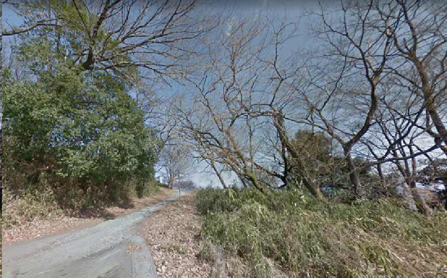

In my head there is a place I go to when I think of my childhood
Seiji Takahashi
Creative Non-Fiction
It is this abandoned playground, in the middle of the woods, on the mountain my grandmother’s house sits on. I don’t know why it lives there, or why it is my childhood place. What I do know is that it is a world of silence. The only sound that can be heard are the occasional summer cicadas, 2-5-centimeter creatures, that soundtrack the heat. There are murky stories about things that can be found in the woods. My family shares these stories.
The stories are:
- The playground in the middle of the woods was built in the 70’s in an effort to give the inhabitants of the mountain a place to play. Initially the swing set and the monkey bars were made of wood, and immediately, these structures were riddled with woodworms. Eventually the playground was renovated and upgraded into steel, but no one wanted to play there anymore. Growing up, I would walk by the playground, now covered in rust.
- Past the playground, far deeper into the mountain is a two-story Shinto shrine that slumps at a slight angle. There are stone tiles that lead up to the entrance of the shrine, but the priest never seems to be around the ancient sanctum. My cousins and I have nightmares about this place. In the summer we would collectively wake from fever dreams, all claiming to see a snake like man in a purple and silver kimono outside the shrine.
- Then, at the end of the woods is a single bamboo hut. A place of unplaceable age or origin. Every day, eggplants, spinach, daikon, and ginger were often found in a straw basket, with a sign that read, “take what you need”.
The summer before my grandmother died, she was near invincible. Fumio would wake up early to walk around the mountain she had lived on and return with flowers to press. She’d often tell me that “once a flower has been pressed, it’s dead, but still breathing in different ways”.

The mountain is still there but the house was sold and I have no reason to go back. These stories let me breathe though, in different kinds of ways.
The entrance to the woods. If you turn left,
you’ll find the things that live there
{kind=link}